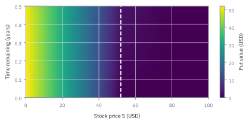
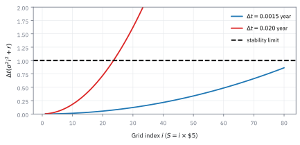
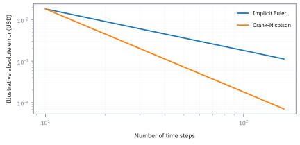
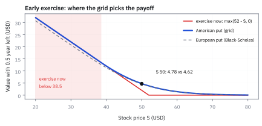

21.1 Finite-Difference Pricing
เปลี่ยน partial differential equation เป็นตารางราคา: stability, implicit, Crank–Nicolson และ American exercise
American put บนหุ้นราคา \$50 มี strike \$52 ดอกเบี้ย 5% volatility 30% ขั้นราคา \$5 และขั้นเวลา 0.02 ปี หากอีกก้าวมีค่า 7.30, 4.10 และ \$2.00 ช่องนี้ควรมีมูลค่าเท่าใด และควรใช้สิทธิ์ทันทีหรือไม่?
เฉลย: มูลค่ารอต่อคือ \$4.1684 สูงกว่าเงินสดจากการใช้สิทธิ์ทันที \$2.00 จึงควรถือต่อที่มูลค่า \$4.1684 โดยคอมพิวเตอร์คำนวณถอยหลังจากวันหมดอายุบนกริดด้วย finite difference
คำที่ต้องรู้ก่อนวางกริด
- partial differential equation (PDE)
- สมการที่บอกการเปลี่ยนของมูลค่าสัญญาตามราคา underlying และเวลา ใช้แปลง no-arbitrage hedge เป็นโจทย์คำนวณ
- finite difference
- การแทน derivative ที่ต่อเนื่องด้วยความต่างของช่องข้างเคียง ใช้ตั้งราคาสัญญาเมื่อไม่มีสูตรปิด
- grid
- ตารางของระดับราคาและเวลา แต่ละช่องเก็บมูลค่า USD ใช้เป็นแผนที่คำนวณและสิ่งที่ทดสอบได้
- explicit scheme
- กฎที่คำนวณแถวเวลาปัจจุบันจากแถวอนาคตโดยตรง ใช้ง่ายแต่ต้องใช้ขั้นเวลาละเอียดเพื่อไม่ให้ error โต
- implicit scheme
- กฎที่แก้ค่าทั้งแถวเวลาเป็นระบบสมการ ใช้แลกงาน linear algebra เพื่อความเสถียร
- Crank–Nicolson
- วิธีที่เฉลี่ย explicit กับ implicit ใช้ลด error ของเวลา แต่ต้องระวังการสั่นรอบ payoff ที่มีมุม
- early exercise
- สิทธิ์ของ American option ที่ใช้สัญญาก่อน expiry ใช้เลือกค่าที่ดีกว่าระหว่างเงินสดทันทีและการรอ
สัญลักษณ์และหน่วย
| สัญลักษณ์ | ความหมาย | หน่วย |
|---|---|---|
| $S$ | ราคาหุ้น underlying | USD ต่อหุ้น |
| $K$ | strike ของ option | USD ต่อหุ้น |
| $V(S,t)$ | มูลค่า option ที่ราคาและเวลานั้น | USD ต่อหุ้น |
| $T,t$ | เวลาหมดอายุและเวลาปฏิทิน | ปี |
| $r,q$ | อัตราปลอดความเสี่ยงและ dividend yield ต่อเนื่อง | ต่อปี |
| $\sigma$ | volatility ภายใต้ risk-neutral measure | ต่อรากปี |
| $\Delta S,\Delta t$ | ระยะห่างราคาและเวลาในกริด | USD; ปี |
| $V_i^n$ | ค่าที่ $S_i=i\Delta S$ และเวลา $t_n$ | USD ต่อหุ้น |
| $g(S)$ | payoff ทันทีของ put | USD ต่อหุ้น |
ที่มาที่ไป: เมื่อไม่มีสูตร ก็แก้สมการบนตารางเอา
สมการที่ได้จากบทที่ 13 มีสูตรปิดเฉพาะกรณีที่ง่ายที่สุด พอเพิ่มเงื่อนไขนิดเดียว เช่นให้ใช้สิทธิ์ก่อนกำหนดได้ หรือให้มีระดับราคาที่ทำให้สัญญาหมดอายุ ก็ไม่เหลือสูตรแล้ว
ทางออกที่ใช้ในวิศวกรรมมานานคือแก้สมการเชิงตัวเลขบนตาราง โดยแบ่งทั้งเวลาและราคาเป็นช่อง ๆ
Michael Brennan กับ Eduardo Schwartz นำวิธีนี้มาใช้กับการตั้งราคา derivative ในช่วงปลายทศวรรษ 1970
ข้อดีที่ทำให้มันยังใช้กันอยู่คือความยืดหยุ่น เงื่อนไขแปลก ๆ ส่วนใหญ่ใส่เข้าไปได้ตรง ๆ และได้ราคาทั้งตารางมาพร้อมกัน จึงประมาณ delta และ gamma จากราคาช่องข้างเคียงได้ ส่วน vega หรือความไวต่อ input อื่นยังต้องแก้ sensitivity equation หรือรันใหม่
เหตุผลที่ย้อนเวลาจาก expiry
ที่ expiry เรารู้ payoff แน่นอน: put จ่ายส่วนที่ strike สูงกว่าหุ้น PDE บอกว่าหาก hedge ความเสี่ยงเล็ก ๆ ของ option ด้วยหุ้นได้ พอร์ตที่เหลือให้ผลตอบแทนเท่าอัตราปลอดความเสี่ยง จึงไม่ใช่สูตรทายราคาหุ้น แต่เป็นราคาที่สอดคล้องกับสมมติฐาน volatility, carry และ no-arbitrage
แทนที่จะเก็บราคาทุกค่าที่เป็นไปได้ของหุ้น เราตัดช่วงตั้งแต่ศูนย์ถึงขอบราคาที่เลือกเป็นช่องราคาเท่า ๆ กัน แล้วเดินย้อนจากวันหมดอายุทีละขั้นเวลา เมื่อเพิ่มความละเอียด ต้องทดสอบทั้งช่องราคา ช่องเวลา และขอบใหม่; งานละเอียดขึ้นไม่ได้แปลว่าขอบกริดกว้างพอแล้ว
ขั้นที่ 1 — Black–Scholes PDE ที่เป็นต้นทางของกริด
สำหรับหุ้นจ่าย dividend yield ต่อเนื่อง การ hedge ให้สมการต่อไปนี้
ทุกพจน์มีหน่วย USD ต่อหุ้นต่อปี: เวลา, ความโค้งจากความสุ่ม, carry และ discount ตามลำดับ
จาก derivative สู่เพื่อนบ้านสามช่อง
slope ประมาณจากความต่างของเพื่อนบ้านซ้ายขวาหารระยะห่างสองช่อง curvature ประมาณจาก slope ด้านขวาลบ slope ด้านซ้ายแล้วหารความกว้างช่องอีกครั้ง จึงได้ตัวคูณหนึ่ง ลบสอง หนึ่ง
ย้ายพจน์เวลาของ PDE ไปอีกฝั่งแล้วเดินจากแถวอนาคตที่รู้กลับหนึ่งก้าว จะได้บรรทัดสุดท้าย แทนสองบรรทัดแรกลงไปและเก็บตัวคูณของช่องซ้าย กลาง ขวา จึงได้ a, b, c ด้านล่าง
สูตรผลต่างมาจาก Taylor expansion: $V(S+h)=V+hV_S+h^2V_{S\,S}/2+O(h^3)$ และ $V(S-h)=V-hV_S+h^2V_{S\,S}/2+O(h^3)$ ลบกันแล้วตัดช่วง $2h$ ได้ partial derivative อันดับหนึ่ง ส่วนบวกกันลบ $2V$ แล้วตัด $h^2$ ได้ partial derivative อันดับสอง function ต้องเรียบพอในบริเวณนั้น
ขั้นที่ 2 — นิยามของการเดินถอยหลังหนึ่งก้าวบนกริด
บรรทัดนี้เป็น นิยาม ของขั้นตอนที่เราเลือกใช้ ไม่ใช่ผลที่พิสูจน์ มูลค่าที่ช่องหนึ่งในเวลาก่อนหน้า ถูกเขียนเป็นผลรวมถ่วงน้ำหนักของสามช่องที่อยู่ติดกัน ในเวลาถัดไป เหตุผลที่ใช้สามช่องมาจากสมการที่ต้องแก้ ซึ่งมีทั้งความชันและความโค้ง ความชันต้องใช้สองช่วง และความโค้งต้องใช้สามจุด คำว่า explicit หมายถึงฝั่งขวามีแต่ค่าที่รู้แล้วทั้งหมด จึงคำนวณตรงได้โดยไม่ต้องแก้ระบบ ราคาที่จ่ายคือเงื่อนไขความเสถียรที่ขั้นที่ 7 จะพูดถึง
$a_i,b_i,c_i$ ไม่มีหน่วย; $i$ เป็น index ไม่มีหน่วย และผลลัพธ์ยังเป็น USD ต่อหุ้น
ขั้นที่ 3 — นิยามของน้ำหนักสามตัว และที่มาของแต่ละก้อน
สามก้อนนี้เป็น นิยาม ของน้ำหนักที่ได้จากการแทน derivative ด้วยผลต่างบนกริด อ่านทีละก้อน: ก้อนที่มีความผันผวนกำลังสองมาจากพจน์ความโค้งในสมการ จึงปรากฏในน้ำหนักทั้งสามตัว ก้อนที่มีอัตราสุทธิมาจากพจน์ความชัน จึงปรากฏด้วยเครื่องหมายตรงข้ามกันในสองข้าง และหายไปจากตัวกลาง ส่วนเลขหนึ่งในตัวกลางคือค่าเดิมที่ยังอยู่ และพจน์ที่มีอัตราคิดลดคือการหักมูลค่าตามเวลา ข้อควรระวัง: ถ้าน้ำหนักตัวใดติดลบ วิธีนี้จะไม่เสถียร ซึ่งเป็นเหตุผลที่ต้องจำกัดขนาดก้าวเวลา
หาก $b_i$ ติดลบ error สามารถโตและสลับเครื่องหมายได้; volatility, จุดขอบ และขั้นเวลาจึงสัมพันธ์กัน
แทนสองสูตรผลต่างในสมการก้าวเวลาแล้วรวบตาม $V_{i-1},V_i,V_{i+1}$ พจน์ diffusion ให้ coefficient $(1,-2,1)\sigma^2S_i^2\Delta t/(2\Delta S^2)$ พจน์ drift ให้ $(-1,0,1)(r-q)S_i\Delta t/(2\Delta S)$ และ discount หัก $r\Delta t$ จากช่องกลาง ใช้ $S_i=i\Delta S$ จึงตัด $\Delta S$ แล้วได้ $a_i,b_i,c_i$
ขอบที่คมกว่าที่คิด — ทำไมเส้นแบ่งอยู่ที่ครึ่งหนึ่งพอดี
ผลในทางปฏิบัติคือถ้าละเอียดขึ้นสองเท่าในแกนราคา ต้องซอยเวลาถี่ขึ้นสี่เท่า เพราะ $\Delta x$ อยู่ในกำลังสอง ต้นทุนการคำนวณจึงโตเร็วกว่าความละเอียดที่ได้มาก และนี่คือเหตุผลที่ตำแหน่งงานจริงมักใช้ scheme แบบ implicit หรือ Crank-Nicolson ซึ่งแลกความยุ่งยากในการแก้ระบบสมการ กับการไม่มีเพดานเวลาให้ต้องระวัง
ตรวจเองใน 30 วินาที ตั้งกริดเล็ก ๆ ใส่ค่าหนึ่งไว้กลางแถว แล้วรัน 60 รอบที่ $\lambda=0.6$ ถ้าตัวเลขไม่ระเบิด แปลว่าเขียนสูตรผิด ไม่ใช่ว่าเงื่อนไขนี้ใช้ไม่จริง
วิธีดูว่าสูตรวนซ้ำจะระเบิดไหม คือใส่คลื่นลูกเดียวเข้าไปแล้วถามว่ารอบหน้ามันโตขึ้นหรือเล็กลง ตัวคูณที่คุมเรื่องนี้คือ $g$
ก้อน $\sin^{2}$ วิ่งได้มากสุดเท่ากับหนึ่ง ซึ่งเกิดกับคลื่นที่สั้นที่สุดบนกริด คือคลื่นที่สลับขึ้นลงทุกช่อง ตรงนั้นเองที่ $g$ ต่ำสุด และเป็นจุดที่ตัดสินทุกอย่าง
แทนค่าสูงสุดลงไปได้ $g=1-4\lambda$ ถ้าจะไม่ให้ขนาดโตขึ้น ต้องไม่ต่ำกว่า $-1$ จัดรูปแล้วได้ $\lambda$ ห้ามเกินครึ่ง นี่คือที่มาของเลขครึ่งที่ดูเหมือนมาจากไหนไม่รู้
สี่บรรทัดล่างคือผลรันจริง ขยับจาก 0.50 ไป 0.55 แค่นั้น คำตอบกระโดดจาก 0.095 เป็นเกือบสามพัน ไม่ใช่ความคลาดเคลื่อนที่ค่อย ๆ แย่ลง แต่เป็นสวิตช์ที่พลิกทันที
แล้วเอาไปใช้ทำอะไรได้จริงบ้าง
การแก้สมการเชิงตัวเลขบนตาราง เป็นวิธีตั้งราคาที่ยืดหยุ่นที่สุดสำหรับสัญญาที่มีเงื่อนไข
ใช้ตั้งราคาสัญญาที่ใช้สิทธิ์ก่อนกำหนดได้ ซึ่งต้องตรวจทุกจุดเวลาว่าควรใช้สิทธิ์หรือไม่
ใช้ตั้งราคาสัญญาที่มีเงื่อนไขแตะระดับราคา ซึ่งจัดการได้ตรงไปตรงมาด้วยวิธีนี้
ใช้ประมาณ delta และ gamma จากตารางราคาเดียวกัน ส่วนความไวต่อ volatility และ rate ต้องคำนวณเพิ่ม
Figure 21.1a — American put ที่แก้บนกริดจริง

put ที่ strike 52 ดอกเบี้ย 5% volatility 30% แก้บนกริดด้วย implicit scheme 100 ก้าวเวลาและช่องราคา \$1 สีคือมูลค่าของ put เส้นขาวทึบคือขอบที่ใช้สิทธิ์ทันทีดีกว่า เลื่อนจาก 52 ตอนใกล้หมดอายุลงไปใต้ 40 เมื่อเหลือครึ่งปี จุดส้มคือหุ้น 50 ที่เหลือครึ่งปี มูลค่า 4.78
ขั้นที่ 4 — terminal และ boundary conditions ของ European put
payoff และขอบทั้งสองปิด PDE บนช่วงราคาจำกัด
สำหรับ American put ขอบซ้ายเป็น $K$ เพราะ exercise ได้ทันที; เลือก $S_{max}$ แล้วต้องทำ sensitivity test ว่าราคาวันนี้ไม่เปลี่ยนเกิน tolerance
คำนวณน้ำหนักที่ราคา 50 ด้วยมือ
input คือ volatility 30%, rate 5%, dividend yield ศูนย์ และก้าวเวลา 0.02 ปี ดัชนีช่องราคาเท่ากับสิบ ไม่ใช่ราคาห้าสิบ เอาดัชนีนี้เข้า coefficient จึงได้ตัวเลขสามตัว
ผลรวมต่ำกว่าหนึ่ง 0.001 เพราะมี discount หนึ่งก้าว น้ำหนักทั้งหมดบวกที่ node นี้ แต่ยังต้องตรวจทุก node ของกริด ค่าเพื่อนบ้าน 7.30, 4.10 และ 2.00 เป็นข้อมูลของแถวสมมติที่ให้มาเพื่อฝึกหนึ่งก้าว ไม่ใช่ราคาที่ solve มาจาก payoff ครึ่งปีแล้ว
ขั้นที่ 5 — แทนตัวเลขในหนึ่งช่อง
ตัวอย่างกำหนดหุ้น \$50, strike \$52, อายุครึ่งปี, อัตรา 5% ต่อปี, volatility 30% ต่อรากปี, ช่องราคา \$5 และก้าวเวลา 0.02 ปี
ผลลัพธ์คือ continuation value \$4.1684 ต่อหุ้น ณ ช่องราคา \$50; intrinsic value ในช่องนี้เท่ากับ \$2 ต่อหุ้น
ขั้นที่ 6 — นิยามของเงื่อนไขสิทธิ์ใช้ก่อนกำหนด ที่ต้องบังคับทุกก้าว
บรรทัดนี้เป็น นิยาม ของกติกาที่เราบังคับ ไม่ใช่ผลที่พิสูจน์ หลังคำนวณมูลค่าของการรอต่อในแต่ละช่อง ต้องเทียบกับเงินที่ได้ถ้าใช้สิทธิ์เดี๋ยวนี้ แล้วเลือกตัวที่มากกว่า เพราะเจ้าของสิทธิ์จะไม่เลือกทางที่แย่กว่า นี่คือการแปลงเกณฑ์ในหัวข้อ 19.4 ให้เป็นขั้นตอนที่รันได้จริง จุดสำคัญคือต้องทำทุกก้าว ไม่ใช่ทำครั้งเดียวตอนจบ เพราะการใช้สิทธิ์เกิดได้ทุกวัน และผลของมันต้องไหลย้อนกลับไปกระทบมูลค่าของวันก่อนหน้าด้วย
ทั้งสองค่าเป็น USD ต่อหุ้น; max คือสิทธิ์เลือก สำหรับ explicit step เปรียบเทียบได้โดยตรง
ส่วน implicit หรือ Crank–Nicolson ของ American ต้องแก้เงื่อนไข PDE กับ exercise ร่วมกัน เช่น projected iteration หรือ penalty method การ clip คำตอบ European ครั้งเดียวเป็นเพียง approximation ที่ต้องตรวจ convergence
คำตอบ — มูลค่า American Put บนกริดหนึ่งช่อง
คำถาม: American put บนหุ้น \$50 มี strike \$52 อัตรา 5% volatility 30% ขั้นราคา \$5 ขั้นเวลา 0.02 ปี อีกก้าวมีค่า 7.30, 4.10, \$2.00 ช่องนี้ควรมีมูลค่าเท่าใด และควร exercise หรือไม่?
ของที่มี (ขั้นที่ 3 ถึง 6): น้ำหนัก a = 0.085, b = 0.819, c = 0.095 และ payoff ทันที \$2.00
1. continuation value จากการถือรอ: 0.085(7.30) + 0.819(4.10) + 0.095(2.00) ได้ \$4.1684
2 เปรียบเทียบกับ intrinsic value: \$2.00 น้อยกว่า \$4.1684 ดังนั้นจึงควรถือต่อ ไม่ exercise
3 มูลค่า American put ที่ช่องนี้: เลือกค่าที่มากกว่า ได้ \$4.1684 ต่อหุ้น
ตรวจเองใน 10 วินาที: ผลรวมน้ำหนัก 0.085 + 0.819 + 0.095 = 0.999 = 1 - (0.05)(0.02) ถูกต้อง และ 4.1684 มากกว่า 2.00 จึงไม่ exercise
แปลว่าอะไร: สิทธิ์ในการรอมีค่า 4.1684 - 2.00 = \$2.1684 ต่อหุ้น finite-difference engine ตรวจสอบเงื่อนไขนี้ทุกช่องเพื่อลากเส้น early-exercise boundary บนกริด
โค้ดตรวจน้ำหนักและมูลค่า American Put บนกริด
import numpy as np
S, K, r, q, sigma = 50.0, 52.0, 0.05, 0.0, 0.30
dS, dt = 5.0, 0.02
i = int(round(S / dS))
assert i == 10
a = 0.5 * dt * (sigma**2 * i**2 - (r - q) * i)
b = 1.0 - dt * (sigma**2 * i**2 + r)
c = 0.5 * dt * (sigma**2 * i**2 + (r - q) * i)
assert abs(a - 0.085) < 1e-6
assert abs(b - 0.819) < 1e-6
assert abs(c - 0.095) < 1e-6
assert abs((a + b + c) - (1.0 - r * dt)) < 1e-6
V_down, V_mid, V_up = 7.30, 4.10, 2.00
V_cont = a * V_down + b * V_mid + c * V_up
assert abs(V_cont - 4.1684) < 1e-6
intrinsic = max(K - S, 0.0)
assert intrinsic == 2.0
V_american = max(intrinsic, V_cont)
assert abs(V_american - 4.1684) < 1e-6สคริปต์คำนวณน้ำหนัก explicit scheme ที่ node i=10 ตรวจสอบเงื่อนไข discount และยืนยันการตัดสินใจถือต่อของ American put
Figure 21.1b — explicit scheme พังจากปลายกริดก่อน

ที่ volatility 30% ต่อรากปีและขั้นราคา \$5 ขีดจำกัดที่ระดับ \$400 อยู่ราว 0.00174 ปี เส้นแดงใช้ 0.02 ปีจึงเกินหนึ่งและอาจสั่น แม้กลางกริดดูสงบ เพราะทุกแถวต้องใช้กติกาเดียวกัน
implicit และ Crank–Nicolson แลกอะไร
explicit ต้องทำให้ค่าน้ำหนักไม่ขยาย error เอง จึงใช้ขั้นเวลาจำนวนมากเมื่อ volatility สูงหรือขอบราคาไกล implicit ย้าย unknown ของแถวใหม่ไปฝั่งซ้ายแล้วแก้ระบบ tridiagonal ด้วย Thomas algorithm โดยทั่วไปจึงทนต่อก้าวใหญ่กว่า แต่ stable ไม่ได้แปลว่า accurate
Crank–Nicolson เฉลี่ย operator สองฝั่งของเวลาและมักให้ error เวลาอันดับสองในบริเวณเรียบ ทว่า payoff มี kink ที่ strike จึงอาจเกิด oscillation ช่วงแรก ระบบจริงมักใช้ Rannacher smoothing ก่อน แล้วจึงตรวจว่าการ refine กริดทำให้ราคา converges
ขั้นที่ 7 — นิยามของอีกสองวิธี ที่แลกงานคำนวณกับความเสถียร
สองก้อนนี้เป็น นิยาม ของวิธีที่ต่างออกไป ไม่ใช่ผลที่พิสูจน์ วิธีแรกอ่านค่าของเพื่อนบ้านที่เวลาใหม่แทนที่จะเป็นเวลาเก่า จึงต้องแก้ระบบสมการทุกก้าว แลกกับการที่มันเสถียรไม่ว่าจะเลือกขนาดก้าวเวลาเท่าไร วิธีที่สองเฉลี่ยสองแบบเข้าด้วยกันครึ่งต่อครึ่ง ซึ่งทำให้ความคลาดเคลื่อนหดเร็วกว่า ระบบที่ต้องแก้มีรูปสามแถบทแยง จึงแก้ได้ในเวลาที่แปรตามจำนวนช่องเท่านั้น ไม่ได้แพงอย่างที่การกลับตารางทั่วไปจะเป็น
สมการแรกคือ implicit Euler และสมการที่สองคือ Crank–Nicolson; $L$ มีหน่วยต่อปีจึงทำให้ vector ทั้งสองข้างยังมีหน่วย USD ต่อหุ้น
Figure 21.1c — ความเสถียรกับความแม่นเป็นคนละคำถาม

put แบบยุโรปตัวเดียวกันที่หุ้น 50 วัดความคลาดเทียบคำตอบของกริดเดียวกันที่ใช้ 5,000 ก้าว เพื่อแยกความคลาดของเวลาออกจากของช่องราคา เพิ่มก้าวเท่าตัว implicit Euler คลาดลดครึ่งหนึ่ง Crank–Nicolson ลดราวสี่เท่า ช่วงก้าวน้อยมากมันยังลดไม่ถึงนั้นเพราะมุมหักของ payoff ที่ strike
Figure 21.1d — ขอบใช้สิทธิ์ก่อนกำหนดไม่ใช่ strike

เหลือครึ่งปี American put จากกริด (เส้นน้ำเงิน) อยู่เหนือ European put จาก Black–Scholes (เส้นประ) ทุกราคา ที่หุ้น 50 คือ 4.78 เทียบ 4.62 ต่ำกว่า 38.5 เส้นน้ำเงินทับเส้นแดง แปลว่าใช้สิทธิ์ทันทีดีกว่ารอ ขอบนี้จึงอยู่ต่ำกว่า strike 52 มาก
controls ที่ต้องผ่านก่อน publish ราคา
| ตรวจ | เหตุผล |
|---|---|
| grid refinement | ราคาเมื่อ halving $\Delta S$ และ $\Delta t$ ต้องนิ่งตาม tolerance |
| benchmark European | กริด European ต้องเข้าใกล้ Black–Scholes |
| price bounds | ทุกค่าต้องไม่ติดลบ; American ต้องไม่ต่ำกว่า intrinsic ส่วน European ใช้ขอบเขตคิดลดที่ตรงสัญญา |
| American dominance | American put ต้องไม่ต่ำกว่า European put |
| boundary sensitivity | ขยับ $S_{max}$ แล้วราคาเป้าหมายต้องไม่เปลี่ยนสาระสำคัญ |
บันทึก tolerance, grid และ runtime เป็นส่วนหนึ่งของ valuation record ไม่ใช่ค่า debug ที่หายหลังปิด notebook
กับดัก: โปรแกรมไม่ crash ไม่ได้แปลว่าราคาใช้ได้
ห้ามเชื่อค่าที่ออกมาหนึ่งครั้ง ต้องตรวจ monotonicity ตาม strike, lower bound, convergence และขอบกริด หากเพิ่ม $S_{max}$ แต่ลืมลด $\Delta t$ explicit scheme อาจเสียเสถียรภาพในส่วนที่ไม่เคย plot
PDE หนึ่งมิติเหมาะกับ underlying เดียว เมื่อเพิ่มหุ้นหลายตัวหรือ stochastic volatility จำนวนจุดโตแบบคูณกันจนเกิด curse of dimensionality; กริดไม่ใช่คำตอบสากล แต่มันเป็น benchmark ที่โปร่งใสและสอนวินัยของ boundary conditions
ข้อจำกัด: วิธีนี้สมมติอะไร และของจริงเป็นอย่างไร
| เรื่อง | วิธีนี้สมมติว่า | ของจริงเป็นอย่างไร | ผลที่ตามมาเวลาใช้งาน |
|---|---|---|---|
| จำนวนมิติ | ขยายไปหลายสินทรัพย์ได้ | งานคำนวณระเบิดตามจำนวนมิติ | เกินสามมิติทำไม่ไหว ต้องเปลี่ยนไปใช้การสุ่ม |
| ความเสถียร | เลือกขนาดขั้นได้อิสระ | บางวิธีระเบิดถ้าขั้นเวลาใหญ่เกินไปเทียบกับขั้นราคา | ต้องตรวจเงื่อนไขความเสถียรก่อนเลือกขนาดขั้น ไม่งั้นได้ตัวเลขที่ไร้ความหมาย |
| ขอบของตาราง | กำหนดขอบได้ถูกต้อง | การกำหนดขอบผิดทำให้ราคาเพี้ยนทั้งตาราง | ต้องวางขอบให้ไกลพอจากบริเวณที่สนใจ ซึ่งเพิ่มงานคำนวณ |
แถวกลางเป็นสาเหตุที่ผลลัพธ์ออกมาเป็นตัวเลขประหลาดโดยไม่มีข้อความแจ้งเตือน
ก่อนไปต่อ: calibration
finite difference ให้ price engine ที่ควบคุม stability และ early exercise ได้ แต่ยังต้องเลือก volatility, dividend และ parameter ของ model ให้สอดคล้องกับ quote หลายตัวพร้อมกัน นั่นไม่ใช่การ solve หนึ่งตัวแปรอีกต่อไป หัวข้อถัดไปจึงย้ายจากแผนที่ราคาไปยังภูมิประเทศของ optimizer
สรุปที่ใช้ได้จริง
- PDE, payoff และ boundary conditions ร่วมกันกำหนดราคาบนกริด; ขอบที่ไม่ถูกตรวจคือ model assumption ที่ซ่อนอยู่
- explicit scheme ต้องผ่าน stability ทุกจุด ส่วน implicit และ Crank–Nicolson ยังต้องผ่าน convergence controls
- American option ใช้ max ของ continuation และ intrinsic ทุกเวลา แล้วต้องผ่าน bounds, monotonicity และ benchmark checks
- explicit scheme เสถียรก็ต่อเมื่อ $\lambda=\Delta t/(\Delta x)^2\le 1/2$ ซึ่งมาจากตัวคูณ $g=1-4\lambda\sin^2(k\Delta x/2)$ ที่ห้ามมีขนาดเกินหนึ่ง ขยับจาก 0.50 เป็น 0.55 คำตอบพุ่งจาก 0.095 เป็น 2,862 ทันที